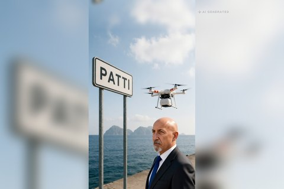

Politica italiana · 1 novembre 2026
157 articoli e circa 26 miliardi di euro. Il taglio dell'Irpef vale al massimo 500 euro l'anno, il fondo per le uscite anticipate è di 850 milioni, ma chi potrà usarlo e a che età lo dovrà decidere il Parlamento.
di Franco Zanghì
Sicilia · 1 novembre 2026

Le sacche per le trasfusioni d'urgenza raggiungeranno Lipari e Vulcano senza aspettare l'aliscafo. L'Asp di Messina è alla firma del contratto. L'idea è di un medico dell'ospedale Barone Romeo, nata da una ragazzina ferita in mare.
di Franco Zanghì
Geopolitica · 31 ottobre 2026
Le immagini dei satelliti su Ras Tanura mostrano che il missile degli Houthi non ha preso un serbatoio: ha centrato l'unità che ricava gasolio, benzina e carburante per aerei. La torcia dell'impianto si è spenta.
di Franco Zanghì
Sicilia · 31 ottobre 2026
Il Parco delle Madonie parla di un numero incontrollabile di animali, un campo scout è stato evacuato nel Ragusano, i sindaci chiedono deroghe. E con il calendario venatorio annullato il problema rischia di crescere.
di Franco Zanghì
Geopolitica · 28 ottobre 2026
Lo stesso giudice della Corte suprema ha processato il padre, fatto arrestare un figlio e tolto il passaporto all'altro, appena sconfitto da Lula. E un banchiere sotto inchiesta, secondo il New York Times, scriveva proprio a lui.
di Franco Zanghì
Attualità · 28 ottobre 2026
Un treno ad alta velocità ha tamponato un convoglio fermo alla stazione di Urda. Il sistema di sicurezza della linea era guasto da sei minuti quando all'AVE è stato dato l'ordine di ripartire.
di Franco Zanghì
Geopolitica · 26 ottobre 2026
Alle 17 di domenica i seggi brasiliani dovevano chiudere. Un giudice della Corte suprema, in passato avvocato personale di Lula, ha concesso due ore in più a tutto il paese. Lula ha vinto con poco più del 51 per cento, Flávio Bolsonaro chiede l'annullamento.
di Franco Zanghì
Attualità · 26 ottobre 2026
Gli attacchi jihadisti completati in Europa passano da 6 a 9 e gli arresti da 289 a 347. In Italia, però, gli attentati del 2025 sono tutti di altra matrice. I conti veri, e perché la Sicilia araba non è il racconto che ci hanno insegnato.
di Franco Zanghì
Cronaca · 24 ottobre 2026
Sotto il mare davanti ad Alicudi ci sono vulcani attivi, e la sequenza sismica in corso non li riguarda. Una faglia e un vulcano fanno tremare la terra in due modi diversi, e sugli strumenti lasciano due firme che i sismologi riconoscono a colpo d'occhio.
di Franco Zanghì
Geopolitica · 23 ottobre 2026
Le esportazioni della regione hanno superato i 24 milioni di barili al giorno, più di quanti ne uscissero prima del conflitto con l'Iran. Eppure il Brent è ai massimi da cinque mesi: il petrolio non manca, manca il modo di portarlo via a un prezzo normale.
di Franco Zanghì